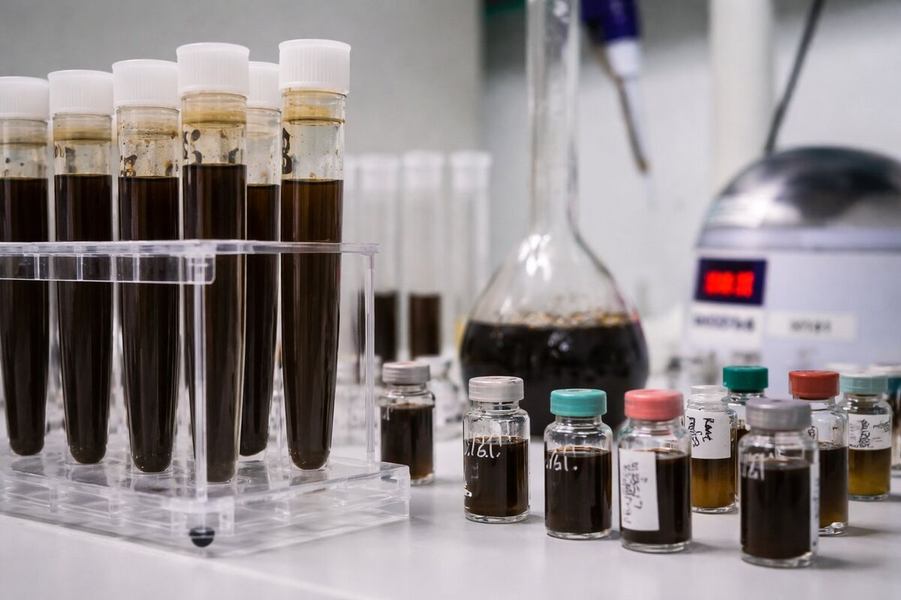

The problem
The biogas sector is still managed
with non-industrial logic
Value is lost because of how plants are managed, not because of technology limitations.

Feedstock variability
Unstable quality, unpredictable costs. Feedstock is purchased by tonnage rather than actual energy value.

Biological instability
Uncontrolled processes, discontinuous production. Biological variability is endured rather than governed with method.

Unstructured decisions
Reactivity instead of prevention. Problems are reacted to instead of anticipated through data and governance.

Untracked value loss
Invisible inefficiencies in flaring, self-consumption, biomethane quality. Margins eroded without anyone measuring them.
The problem del biogas non è tecnologico. È gestionale.